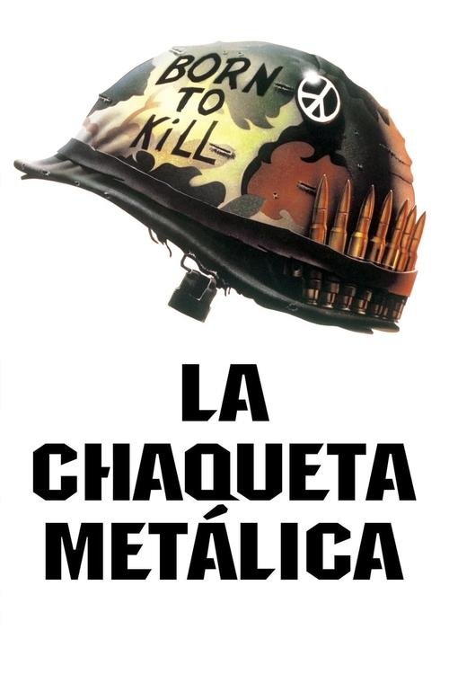

La chaqueta metálica (1987)
Sinopsis Rápida
En el corazón de la guerra de Vietnam, un grupo de reclutas experimenta una brutal transformación física y mental bajo el mando de un sargento implacable. ¿Sobrevivirán al infierno del entrenamiento y a la propia locura?
Sinopsis Detallada
La chaqueta metálica sigue el viaje desgarrador de un pelotón de reclutas marines durante su arduo entrenamiento en la Guerra de Vietnam. El sargento Hartman, un personaje brutal e inolvidable, los somete a un entrenamiento despiadado, que los empuja al límite de su resistencia física y psicológica. La película explora los temas de la violencia, la deshumanización, y la fragilidad de la psique humana bajo presión extrema. La segunda parte de la película, en el campo de batalla, ofrece una visión cruda y realista de la guerra, con escenas impactantes que resaltan el horror y la brutalidad del conflicto.
¿Por qué tenés que verla?
- Una obra maestra del cine bélico que ofrece una visión realista y brutal de la guerra.
- La magistral dirección de Stanley Kubrick, con su meticulosa atención al detalle y la creación de atmósfera.
- Su impacto duradero en la cultura popular y su influencia en otras películas bélicas posteriores.
- La inolvidable actuación de R. Lee Ermey como el Sargento Hartman.
Idea Extra
Análisis del simbolismo en 'La chaqueta metálica': un estudio del impacto de la guerra en la psique humana.